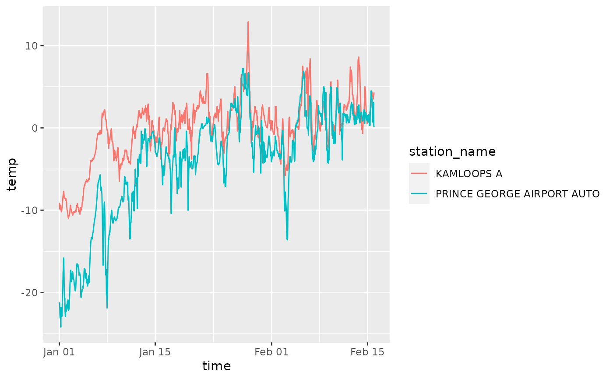

Downloads data from Environment and Climate Change Canada (ECCC) for one or
more stations. For details and units, see the glossary vignette
(vignette("glossary", package = "weathercan")) or the glossary online
https://climate.weather.gc.ca/glossary_e.html.
weather_dl( station_ids, start = NULL, end = NULL, interval = "hour", trim = TRUE, format = TRUE, string_as = NA, time_disp = "none", stn = NULL, encoding = "UTF-8", list_col = FALSE, verbose = FALSE, quiet = FALSE )
| station_ids | Numeric/Character. A vector containing the ID(s) of the
station(s) you wish to download data from. See the |
|---|---|
| start | Date/Character. The start date of the data in YYYY-MM-DD format (applies to all stations_ids). Defaults to start of range. |
| end | Date/Character. The end date of the data in YYYY-MM-DD format (applies to all station_ids). Defaults to end of range. |
| interval | Character. Interval of the data, one of "hour", "day", "month". |
| trim | Logical. Trim missing values from the start and end of the
weather dataframe. Only applies if |
| format | Logical. If TRUE, formats data for immediate use. If FALSE, returns data exactly as downloaded from Environment and Climate Change Canada. Useful for dealing with changes by Environment Canada to the format of data downloads. |
| string_as | Character. What value to replace character strings in a numeric measurement with. See Details. |
| time_disp | Character. Either "none" (default) or "UTC". See details. |
| stn | DEFUNCT. Now use |
| encoding | Character. Text encoding for download. |
| list_col | Logical. Return data as nested data set? Defaults to FALSE.
Only applies if |
| verbose | Logical. Include progress messages |
| quiet | Logical. Suppress all messages (including messages regarding missing data, etc.) |
A tibble with station ID, name and weather data.
Data can be returned 'raw' (format = FALSE) or can be formatted.
Formatting transforms dates/times to date/time class, renames columns, and
converts data to numeric where possible. If character strings are contained
in traditionally numeric fields (e.g., weather speed may have values such
as "< 30"), they can be replaced with a character specified by string_as.
The default is NA. Formatting also replaces data associated with certain
flags with NA (M = Missing).
Start and end date can be specified, but if not, it will default to the start and end date of the range (this could result in downloading a lot of data!).
For hourly data, timezones are always "UTC", but the actual times are
either local time (default; time_disp = "none"), or UTC (time_disp = "UTC"). When time_disp = "none", times reflect the local time without
daylight savings. This means that relative measures of time, such as
"nighttime", "daytime", "dawn", and "dusk" are comparable among stations in
different timezones. This is useful for comparing daily cycles. When
time_disp = "UTC" the times are transformed into UTC timezone. Thus
midnight in Kamloops would register as 08:00:00 (Pacific time is 8 hours
behind UTC). This is useful for tracking weather events through time, but
will result in odd 'daily' measures of weather (e.g., data collected in the
afternoon on Sept 1 in Kamloops will be recorded as being collected on Sept
2 in UTC).
Files are downloaded from the url stored in
getOption("weathercan.urls.weather"). To change this location use
options(weathercan.urls.weather = "your_new_url").
Data is downloaded from ECCC as a series of files which are then bound together. Each file corresponds to a different month, or year, depending on the interval. Metadata (station name, lat, lon, elevation, etc.) is extracted from the start of the most recent file (i.e. most recent dates) for a given station. Note that important data (i.e. station name, lat, lon) is unlikely to change between files (i.e. dates), but some data may or may not be available depending on the date of the file (e.g., station operator was added as of April 1st 2018, so will be in all data which includes dates on or after April 2018).
weather_dl,Download weather data from Environment and Climate Change Canada,Download weather data from Environment and Climate Change Canada — weather_dl,Source:R/weather.R,weather_dl.Rd,character(0),c("weather_dl", "weather"),character(0),list(title = "Description", contents = "Downloads data from Environment and Climate Change Canada (ECCC) for one or\nmore stations. For details and units, see the glossary vignette\n(
"),list(description = "Downloads data from Environment and Climate Change Canada (ECCC) for one or\nmore stations. For details and units, see the glossary vignette\n(vignette(\"glossary\", package = \"weathercan\")) or the glossary online\nhttps://climate.weather.gc.ca/glossary_e.html."),weather_dl( station_ids, start = NULL, end = NULL, interval = "hour", trim = TRUE, format = TRUE, string_as = NA, time_disp = "none", stn = NULL, encoding = "UTF-8", list_col = FALSE, verbose = FALSE, quiet = FALSE ),list(list(name = "station_ids", description = "vignette(\"glossary\", package = \"weathercan\")) or the glossary online\nhttps://climate.weather.gc.ca/glossary_e.html.Numeric/Character. A vector containing the ID(s) of the\nstation(s) you wish to download data from. See the
"), list(name = "start", description = "stations\ndata frame or thestations_searchfunction to find IDs.Date/Character. The start date of the data in YYYY-MM-DD format\n(applies to all stations_ids). Defaults to start of range.
"), list(name = "end", description = "Date/Character. The end date of the data in YYYY-MM-DD format\n(applies to all station_ids). Defaults to end of range.
"), list(name = "interval", description = "Character. Interval of the data, one of \"hour\", \"day\",\n\"month\".
"), list(name = "trim", description = "Logical. Trim missing values from the start and end of the\nweather dataframe. Only applies if
"), list(name = "format", description = "format = TRUELogical. If TRUE, formats data for immediate use. If FALSE,\nreturns data exactly as downloaded from Environment and Climate Change\nCanada. Useful for dealing with changes by Environment Canada to the format\nof data downloads.
"), list(name = "string_as", description = "Character. What value to replace character strings in a\nnumeric measurement with. See Details.
"), list(name = "time_disp", description = "Character. Either \"none\" (default) or \"UTC\". See details.
"), list(name = "stn", description = "DEFUNCT. Now use
"), list(name = "encoding", description = "stations_dl()to update internal data and\nstations_meta()to check the date it was last updated.Character. Text encoding for download.
"), list(name = "list_col", description = "Logical. Return data as nested data set? Defaults to FALSE.\nOnly applies if
"), list(name = "verbose", description = "format = TRUELogical. Include progress messages
"), list(name = "quiet", description = "Logical. Suppress all messages (including messages regarding\nmissing data, etc.)
")),TRUE,# \donttest{ if(check_eccc()) { # Make sure ECCC is available kam <- weather_dl(station_ids = 51423, start = "2016-01-01", end = "2016-02-15") stations_search("Kamloops A$", interval = "hour") stations_search("Prince George Airport", interval = "hour") kam.pg <- weather_dl(station_ids = c(48248, 51423), start = "2016-01-01", end = "2016-02-15") library(ggplot2) ggplot(data = kam.pg, aes(x = time, y = temp, group = station_name, colour = station_name)) + geom_line() }# }#> #> #>,list(list(title = "Value", contents = "A tibble with station ID, name and weather data.
", slug = "value"), list(title = "Details", contents = "Data can be returned 'raw' (format = FALSE) or can be formatted.\nFormatting transforms dates/times to date/time class, renames columns, and\nconverts data to numeric where possible. If character strings are contained\nin traditionally numeric fields (e.g., weather speed may have values such\nas \"< 30\"), they can be replaced with a character specified by
\nstring_as.\nThe default is NA. Formatting also replaces data associated with certain\nflags with NA (M = Missing).Start and end date can be specified, but if not, it will default to the\nstart and end date of the range (this could result in downloading a lot of\ndata!).
\nFor hourly data, timezones are always \"UTC\", but the actual times are\neither local time (default;
\ntime_disp = \"none\"), or UTC (time_disp = \"UTC\"). Whentime_disp = \"none\", times reflect the local time without\ndaylight savings. This means that relative measures of time, such as\n\"nighttime\", \"daytime\", \"dawn\", and \"dusk\" are comparable among stations in\ndifferent timezones. This is useful for comparing daily cycles. When\ntime_disp = \"UTC\"the times are transformed into UTC timezone. Thus\nmidnight in Kamloops would register as 08:00:00 (Pacific time is 8 hours\nbehind UTC). This is useful for tracking weather events through time, but\nwill result in odd 'daily' measures of weather (e.g., data collected in the\nafternoon on Sept 1 in Kamloops will be recorded as being collected on Sept\n2 in UTC).Files are downloaded from the url stored in\n
\ngetOption(\"weathercan.urls.weather\"). To change this location use\noptions(weathercan.urls.weather = \"your_new_url\").Data is downloaded from ECCC as a series of files which are then bound\ntogether. Each file corresponds to a different month, or year, depending on\nthe interval. Metadata (station name, lat, lon, elevation, etc.) is\nextracted from the start of the most recent file (i.e. most recent dates)\nfor a given station. Note that important data (i.e. station name, lat, lon)\nis unlikely to change between files (i.e. dates), but some data may or may\nnot be available depending on the date of the file (e.g., station operator\nwas added as of April 1st 2018, so will be in all data which includes dates\non or after April 2018).
", slug = "details")),2021,list(name = "weathercan", version = "0.6.0", authors = "Steffi LaZerte"),list(destination = "dev", mode = "release", version_label = "default", version_tooltip = "Released version", in_dev = FALSE),list(root = "../", title = "weathercan"),list(css = "/home/steffi/Projects/weathercan/pkgdown/extra.css"),list(type = "inverse", left = "